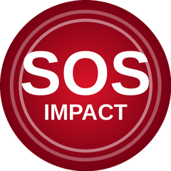

SOS Impact
SOS Impact sorveglia il tuo orologio e rileva un forte colpo seguito da immobilità. Se succede, l'orologio vibra, suona e ti dà alcuni secondi per premere STO BENE. Se non rispondi, invia un avviso su Telegram ai tuoi contatti con la tua posizione sulla mappa, la tua frequenza cardiaca e i dati che vuoi includere (nome, allergie, farmaci).
Cosa fa
- Rilevamento in due fasi: impatto e poi immobilità. Se ti muovi normalmente, non avvisa.
- Conto alla rovescia con vibrazione e allarme sonoro, annullabile con un pulsante.
- Avviso a più contatti Telegram, con pulsante «Visto» e promemoria se nessuno risponde.
- Posizione in tempo reale nei minuti successivi all'avviso.
- SOS manuale: tre tocchi sullo schermo.
- Sensibilità regolabile e profili (Normale, Anziano, Sportivo).
- L'avviso include frequenza cardiaca, ossigeno nel sangue e stress quando l'orologio li ha misurati.
- Extra facoltativo e sperimentale: avviso anche su WhatsApp.
- Avviso di batteria scarica e controllo giornaliero facoltativo «Tutto bene?».
- Simulazione di caduta per provare senza rischi. Disponibile in spagnolo, inglese, francese, tedesco, italiano e portoghese.
- Nessun server proprio: i tuoi dati vanno dal tuo orologio al tuo telefono e a Telegram.
Orologi compatibili
gli attuali Amazfit con Zepp OS 3.0 o superiore: Balance, GTR 4, GTS 4, Active, Bip 5 Unity, Bip 6, Cheetah, Falcon, T-Rex 3, T-Rex Ultra e relative varianti. L'app deve essere aperta sull'orologio, con lo schermo acceso, per leggere i sensori di movimento.
Prezzo e prova
7 giorni di prova gratuita. Poi si attiva con una licenza una tantum da 2 € (chiave associata al codice del tuo orologio).
Avviso importante
SOS Impact non è un dispositivo medico né un dispositivo di sicurezza certificato e non garantisce di rilevare tutte le cadute né che l'avviso arrivi a destinazione. Non chiama i servizi di emergenza: in caso di emergenza, chiama il 112.